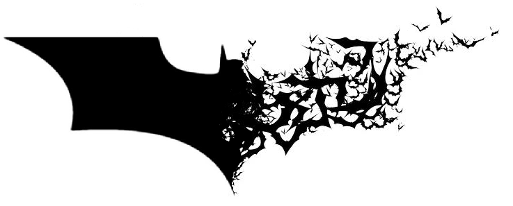
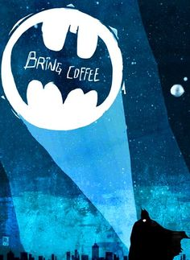

Gotham City är en fiktiv stad i USA, där seriehjälten Batman bor. Staden ska ha grundats av en norsk legosoldat 1635, men senare tagits över av britter. Staden omnämns för första gången 1941, innan dess ägde Batmans äventyr rum i New York eller en annan, icke namngiven stad. Namnet Gotham är även ett äldre smeknamn för New York. I staden finns även Arkham Asylum, ett mentalsjukhus för psykiskt sjuka människor där grova brottslingar spärras in av bland andra Batman.

Gordon är från början en polis i Chicago, men förflyttas till Gotham som ett straff efter att han tagit emot en muta.[källa behövs] Han bestämmer sig därefter att bli den hederligaste polisen Gotham någonsin sett, och får massa problem från sina kollegor och sin chef. Gothams poliskår är oerhört korrupt och ser Gordon som ett hot. Med hjälp från åklagare Harvey Dent och den mystiske Batman börjar han rensa staden från korruptionen som kväver den. Gordon höjs i rang och blir så småningom kommissarie. Han förnekar alltid sitt samarbete med Batman, även om deras allians är uppenbar. I de flesta versioner är det Gordon som kom på idén med Bat-signalen som sitter på polishögkvarterets tak, signalen som Gordon använder för att kontakta Batman med.
DC Comics locations are very specific; while the US is very clearly defined, most of the cities where superheroes are based are fictional. This map shows the homes of many of DC's best-known superheroes, such as Superman, Batman, Green Lantern and more!